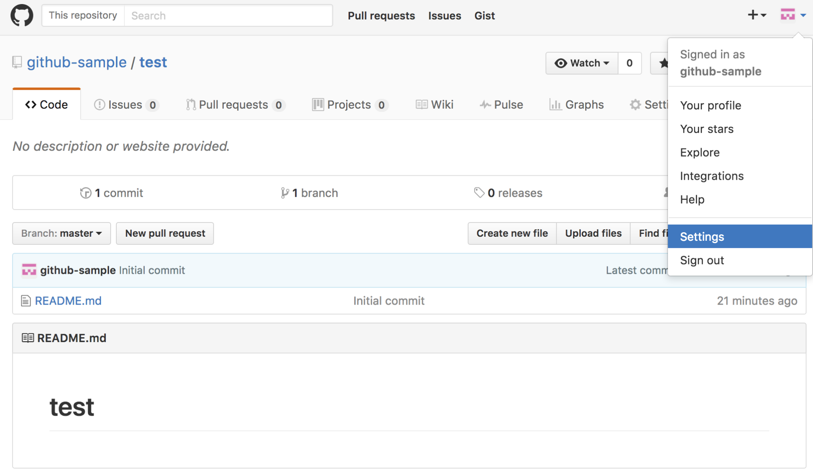
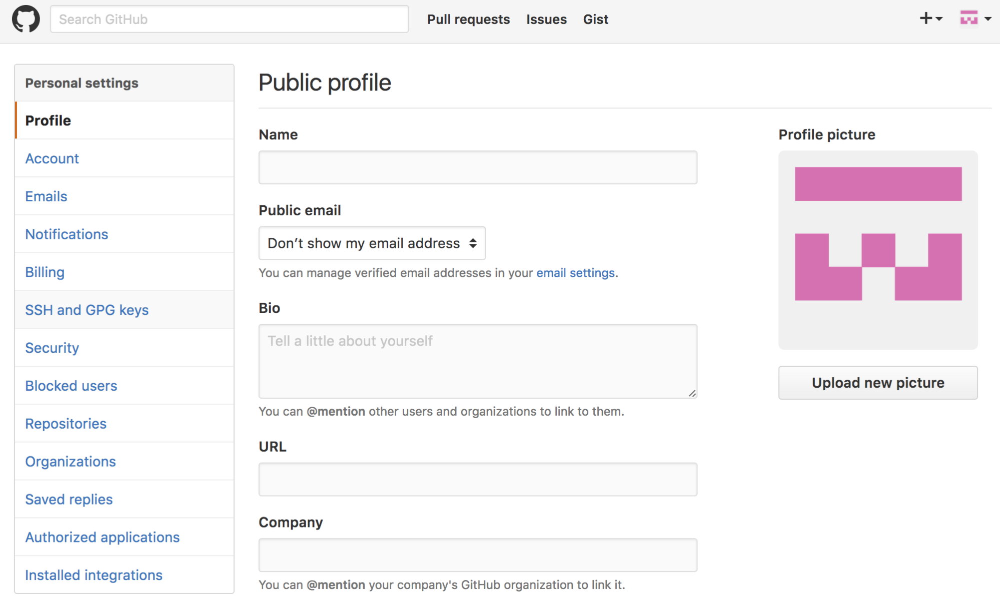
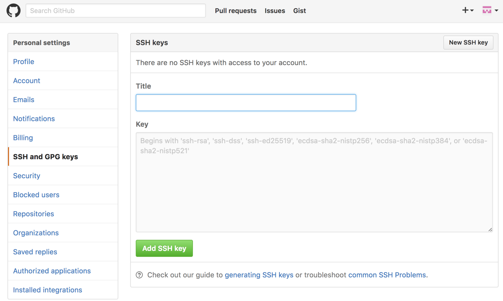

先ほど作成した公開鍵をGitHubに登録します。保存した公開鍵（/Users/hoge/.ssh/id_rsa_github.pub）をエディタで開き、中の文字列をコピーします。コピーする際に改行や余分な文字列が入らないように注意しましょう。
GitHubのページの右上端にあるアイコンをクリックして、アカウントメニューの中にある「Settings」を開きます。
プロフィールの設定画面が開きます。
左側のメニューから「SSH and GPG keys」タブを選択します。
「New SSH key」をクリックすると、公開鍵の登録画面が開きます。
入力したら「Add SSH key」をクリックします。